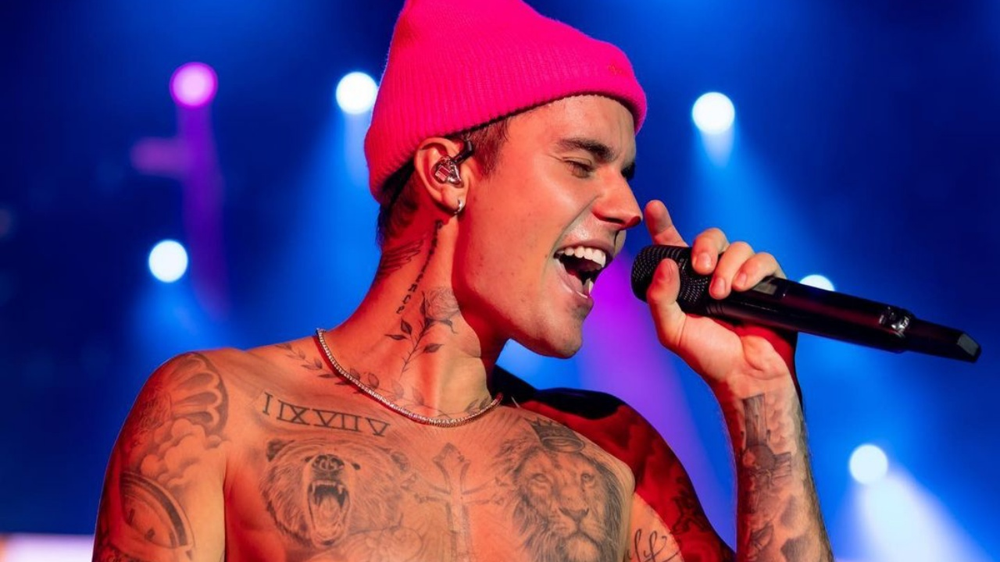

Justin Drew Bieber nasceu em 1º de março de 1994, em London, no Canadá. Criado por sua mãe solteira, Pattie Mallette, Justin demonstrou talento musical desde pequeno, aprendendo a tocar bateria, violão, piano e trompete. Aos 12 anos, começou a postar vídeos cantando no YouTube, e sua voz logo chamou a atenção do empresário Scooter Braun, que o descobriu e o apresentou ao cantor Usher. A partir dali, a vida de Justin mudaria para sempre. Em 2009, Justin lançou seu primeiro single, “One Time”, e no ano seguinte explodiu mundialmente com o sucesso “Baby”, transformando-se em um fenômeno adolescente. Seu estilo pop, romântico e dançante rapidamente conquistou fãs ao redor do planeta, dando origem ao poderoso e fiel fandom conhecido como Beliebers. Ao longo dos anos, lançou álbuns marcantes como My World 2.0, Believe, Purpose e Justice, com hits como “Sorry”, “Love Yourself”, “What Do You Mean?” e “Peaches”. Sua carreira, no entanto, não foi apenas de luz: entre 2013 e 2016, enfrentou várias polêmicas, como prisões, uso de drogas, brigas públicas e um comportamento rebelde que preocupou fãs e a mídia. Após esse período turbulento, Justin deu a volta por cima. Falou abertamente sobre seus problemas com saúde mental, vícios e sua luta contra a Síndrome de Ramsay Hunt, que afetou parte de seus movimentos faciais. Em 2018, casou-se com a modelo Hailey Baldwin, agora Hailey Bieber, com quem anunciou a primeira gravidez em 2024. Hoje, Justin é um dos artistas mais influentes de sua geração, com mais de 150 milhões de discos vendidos e dezenas de prêmios importantes. Mais maduro, espiritualizado e reservado, ele busca manter sua arte viva sem perder sua essência. De um garoto no YouTube a um ícone global, Justin Bieber segue escrevendo sua história — com erros, acertos e milhões de fãs ao redor do mundo.
Justin Bieber não foi apenas um fenômeno teen — ele se tornou um dos artistas mais influentes da música contemporânea. Descoberto no YouTube em 2007, ele foi um dos primeiros artistas da era digital a transformar vídeos caseiros em uma carreira global. Seu sucesso mostrou à indústria que as redes sociais poderiam lançar superstars, mudando para sempre a forma como talentos são descobertos. Lançando seu primeiro álbum aos 15 anos, Justin popularizou um estilo pop melódico com influências de R&B, abrindo caminho para uma nova geração de cantores jovens. Seu som e visual ajudaram a moldar o pop dos anos 2010, ao lado de nomes como One Direction e Ariana Grande — muitos dos quais também foram descobertos online ou através de realities. Com o tempo, Justin evoluiu musicalmente. O álbum "Purpose" (2015) marcou uma virada: com faixas mais maduras, letras introspectivas e batidas eletrônicas, ele redefiniu sua imagem e influenciou o pop a seguir por caminhos mais emocionais e eletrônicos. Músicas como “What Do You Mean?” e “Sorry” ajudaram a consolidar o tropical house e o EDM melódico como sons dominantes na época. Ele também rompeu barreiras de gênero musical: flertou com o hip hop, trabalhou com artistas latinos como Luis Fonsi (“Despacito – Remix”), foi ao gospel e ao R&B contemporâneo, mostrando versatilidade e sendo referência para artistas que buscam uma carreira mais híbrida. Além disso, Justin Bieber foi essencial para mostrar vulnerabilidade masculina no pop. Abordou publicamente temas como saúde mental, vícios, depressão e espiritualidade, normalizando esses assuntos para milhões de fãs jovens ao redor do mundo.
Desde o início de sua carreira, Justin Bieber enfrentou muito mais do que aplausos e fãs histéricos. Ele também foi alvo de uma onda constante de críticas, zombarias e ódio gratuito — especialmente durante sua adolescência. No início dos anos 2010, era comum ver pessoas (até adultos) fazendo piadas sobre sua aparência, sua voz suave e o estilo mais "fofo" de suas músicas. Muita gente não levava o sucesso de Justin a sério, tratando-o como um “produto para adolescentes” e não como um artista de verdade. O termo “Belieber” era muitas vezes motivo de deboche, e fãs do cantor também eram atacadas nas redes sociais. Com o tempo, o próprio Justin alimentou parte do ódio que recebia. Entre 2013 e 2016, se envolveu em polêmicas sérias, como prisões, uso de drogas, brigas, e uma postura considerada arrogante. Isso fez com que ele fosse duramente criticado pela mídia e por pessoas que passaram a vê-lo como "problemático" ou "mimado". Os haters aumentaram — e pareciam torcer pelo seu fracasso. Mas, mesmo com tudo isso, Justin deu a volta por cima. Em vez de fugir, ele enfrentou os erros do passado, pediu desculpas publicamente, falou sobre sua luta com saúde mental e reconstruiu sua imagem. O álbum Purpose (2015) foi um divisor de águas e marcou o retorno de um artista mais maduro — e ainda mais forte. Hoje, Justin Bieber é respeitado por muitos que antes o criticavam. Ele continua sendo alvo de comentários negativos (como qualquer grande figura pública), mas provou que é mais do que um "ídolo teen". Ele se transformou em um exemplo de superação, evolução pessoal e resistência emocional.
